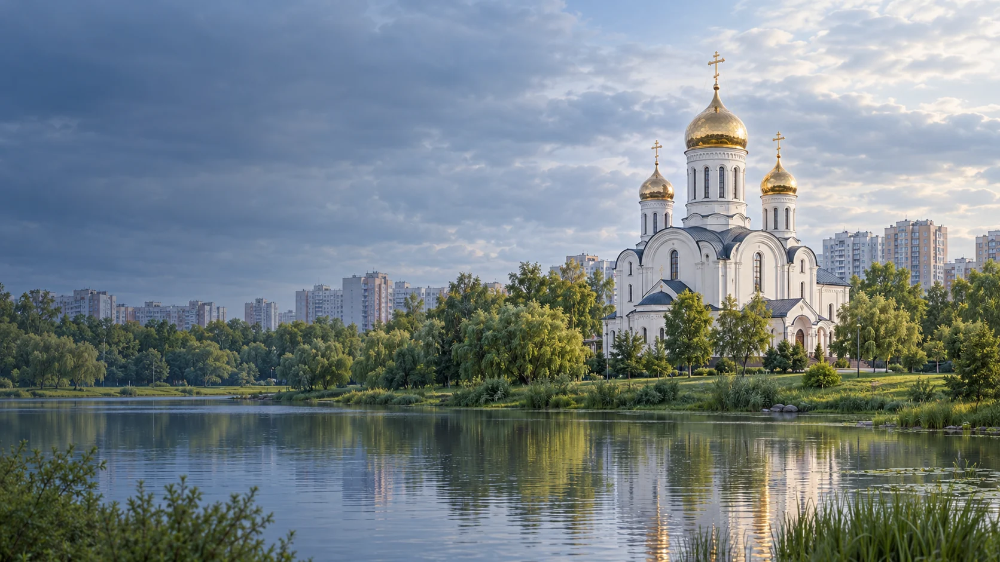

Дом молодёжи
Дом молодёжи «Купчино»
ул. Олеко Дундича, д. 32
Смотреть площадку
Молодёжные площадки района
Дом молодёжи «Купчино» и 16 клубов ПМДЦ «Фрунзенский». Найди занятия рядом с домом.
Смотреть площадкиСведения сверены по открытым источникам. Набор, расписание и условия уточняй у организатора.
Каталог района
Ищи по названию, адресу или направлению.
Показано 17 площадок
ул. Олеко Дундича, д. 32
Смотреть площадкуБухарестская ул., д. 91А
Смотреть площадкуБоровая ул., д. 48А
Смотреть клубул. Димитрова, д. 18
Смотреть клубСофийская ул., д. 47, корп. 1
Смотреть клубКупчинская ул., д. 32
Смотреть клубБудапештская ул., д. 49
Смотреть клубБудапештская ул., д. 33
Смотреть клубКупчинская ул., д. 15
Смотреть клубСофийская ул., д. 44
Смотреть площадкуБухарестская ул., д. 74
Смотреть клубБухарестская ул., д. 31, корп. 1
Смотреть клубСофийская ул., д. 39, корп. 1
Смотреть клубКупчинская ул., д. 23
Смотреть клубПловдивская ул., д. 9
Смотреть клубул. Олеко Дундича, д. 34
Смотреть клубБухарестская ул., д. 114
Смотреть клубПодходящих площадок не найдено. Попробуй другой запрос.
Связаться с учреждением
Контакты учреждения
Софийская ул., д. 38, корп. 2
Перед посещением
Спроси, для кого открыта группа.
Проверь дни, время и наличие мест.
Узнай, как присоединиться.
Перечень площадок, контакты и примеры бесплатных направлений взяты из городского документа ПМДЦ «Фрунзенский», загруженного 01.06.2026. В документе есть и платные занятия: в карточках оставлены направления из колонки бесплатных. Наличие конкретной группы и условия участия уточняй у центра.